00:00:00 · 0.500s
好的 亲爱的欢迎朋友大家好 我们现在来开始讲趋势线金奖 好 第一个问题就是趋势线与均线 我觉得很多人很好奇 为什么我们的交易系统选择趋势线而不是均线 难道仅仅就是用倒置系统吗 不是的 我个人认为趋势线以及形态学比均线好 好 我先跟你讲一下原因
画面保留原分辨率；时间来自实际解码 PTS。附近语音是自动识别候选。点击画面可查看原图。
好的 亲爱的欢迎朋友大家好 我们现在来开始讲趋势线金奖 好 第一个问题就是趋势线与均线 我觉得很多人很好奇 为什么我们的交易系统选择趋势线而不是均线 难道仅仅就是用倒置系统吗 不是的 我个人认为趋势线以及形态学比均线好 好 我先跟你讲一下原因
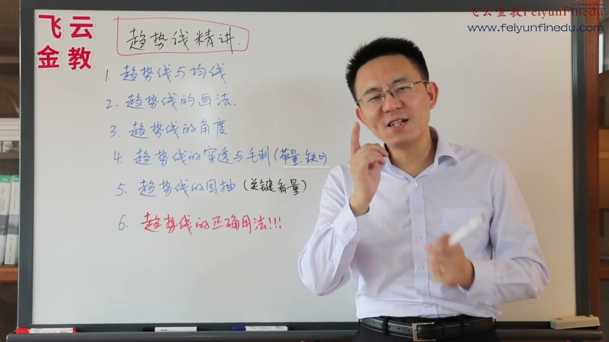
我个人就比较喜欢使用趋势线 原因很简单 第一个 均线的时间周期存在着很大的一个增益空间 我们举个例子 均线我们大多数设置是5日15日30日 是不是 但是有的人就去设置一个74 34 然后就是号称什么神奇均线 拿出去骗钱 而有的人去设置一个什么22日均线 我说我发明了一个22日均线 你没有任何人可以告诉你 哪一个周期是正确的 哪个周期是错误的 你去试一下 你调任何一个周期 调个五天六天七天十天十五天 二十天二百二十天三百六十天 它总会有些点位 会完美地落在你局限上面 那你完美 你这个怎么用它去弄呢 哪一个时间周期正确的 无法保证 趋势线就没这个问题 它只要高低点一连 它就可以做出趋势线
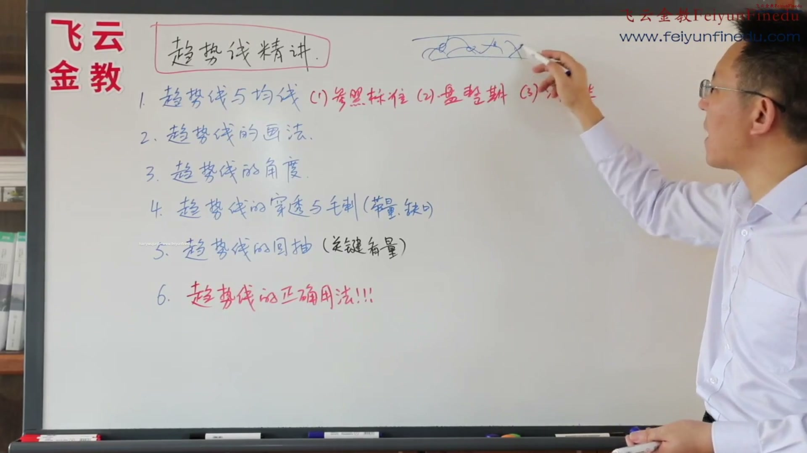
第二个盘整期 盘整期的时候 均线主要是做金叉死叉 或者是怎么样 盘整期的时候 均线就经常打假 一会儿金叉一会儿死叉 就是让你搞得你不知道该怎么办 我们如果用趋势线的话 那么我们只需要画一个上沿 下沿 那么现在的事情我们就等待 但是如果你用均线的话 经常正常告诉你要买 回来又告诉你要卖 又告诉你要买 又告诉你要卖 那么你就很乱 我们两个一画 我们上边接下边就一画 我们就等待 好 就是盘整期 均线比 这个均线比趋势线 没有什么用 滞后性 均线还有个滞后性 而且比较严重 大家都知道了 在趋势行情里面 均线和趋势线 一样好用 那我们比一比就知道了 既然周期均线又不能确定 趋势的时候 大家都好用 你也好用 我也好用 盘整的时候是我好用
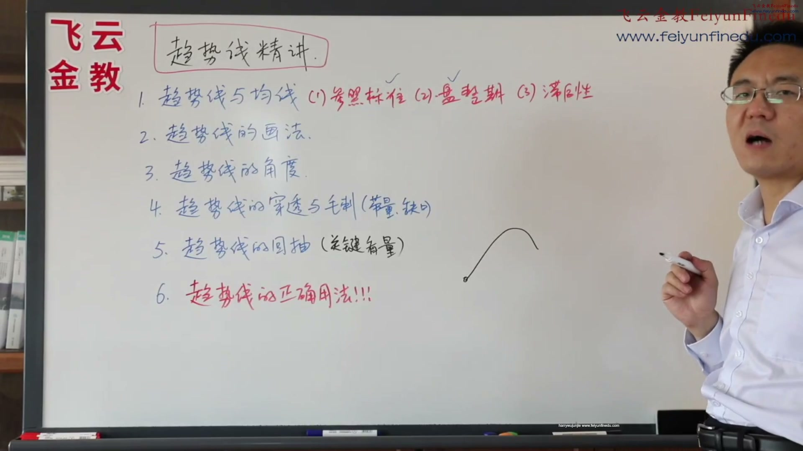
这些都不存在争议了 像我这种心里没有执念的人 什么都可以用 包括我今后也要讲均匀线 我们都会讲一讲 只要是方法 有用的方法 我们大家都可以学一学 只要知道每个方法的优点和弱点 好 我们来看趋势线的画法 趋势线的画法 这个我们知道 如果一个行情开始走 走上来 这个是一个低点 收回了第二个低点 那么我们要知道这个行情以后怎么走 那么我们就在这两个低点之间 进行连一条线 两个点 确定一条直线 是不是 好如果它再往上走 再往上又打回来了 非常好 为什么呢 三个点 那么就证明这个趋势线就画得更好了 有的人说 点位越多越有效
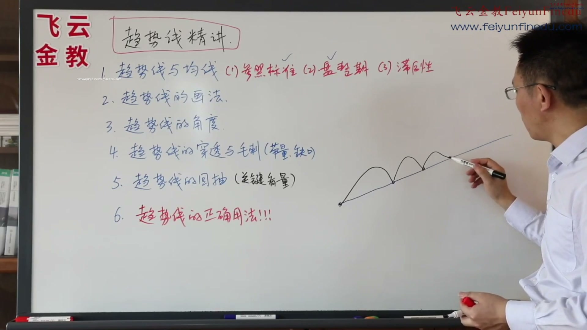
告诉大家 趋势线它是一条线 那怎么可能有支撑 你在看它哪有支撑 支撑是盘口里面大资金进去 把这个上面的卖单吃掉 它才能涨起来 一条线它可能有什么支撑 趋势线没有 不存在真正的支撑压力的这个是意义 但是那么怎么用它呢 就是说它只要在这个趋势线上面运行 我们就认为它的趋势还存在 一旦跌破 我们就准备平仓了 所以趋势线更多的用处是用于平仓 已经赚钱了 你什么时候走的问题 不是解决你开仓的问题 开仓的问题 你要用逆转与持续 要用趋势线和形态突破 双突破才能解决你开仓的问题 而不是解决你
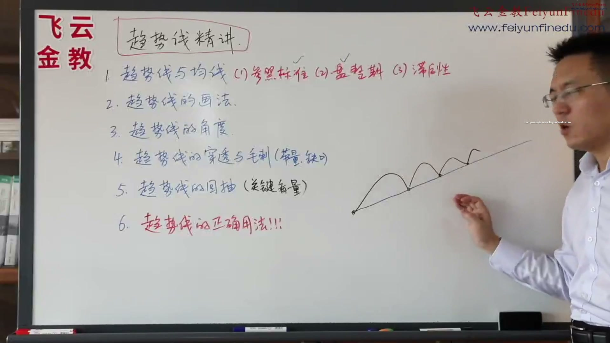
只有这个趋势线 这个地方它是解决你要注意了 这个地方你要注意 只有可能行情会发生改变的 好 这就是编剧画法我们来说的 好 你在这的时候呢 我们画了第一条趋势线 然后行情它就继续往上涨 这个时候呢 行情就可能有一个加速 你看 长成这样子 回来 这个地方我们不画上面的 因为关键是 你要想做什么 如果你是想 确定什么时候出来 那么你就不要画上眼 不要画上眼 没有意义啊 好 那么这个时候你看 趋势线开始往上走 哎 它没有低点了 低点是在这儿了 那么这个时候呢 你怎么办呢 你就再做一条趋势线 哎 然后这两个点连线 它在这边又来走 哎 走的时间越多 证明这个越有效 一旦跌破
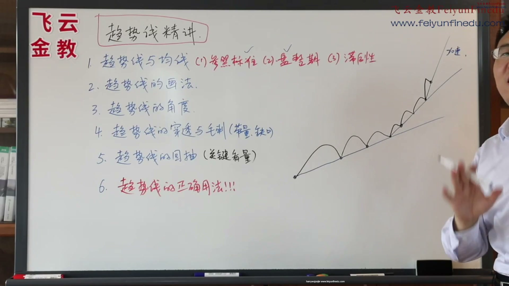
一定一定要注意 好 它的趋势线去走 那么有一天它加速了 加在这 这个时候又出现了一个点 那么你把这两个点再演起来 就画第三条趋势线 就是一个加速线 加速的趋势线 这就是趋势线的画法 一条加速 我自己大量的复盘 和大量的个人经验证明 叫事不过三 只要一条主趋势线 次要趋势线 加速线 基本上行情就会有回调 事不过三 很少看到有次 极少极少极少 主要就是三条趋势线 加速之后它就会回调 好 这是我们趋势线的画法 基本上就讲清楚了 好
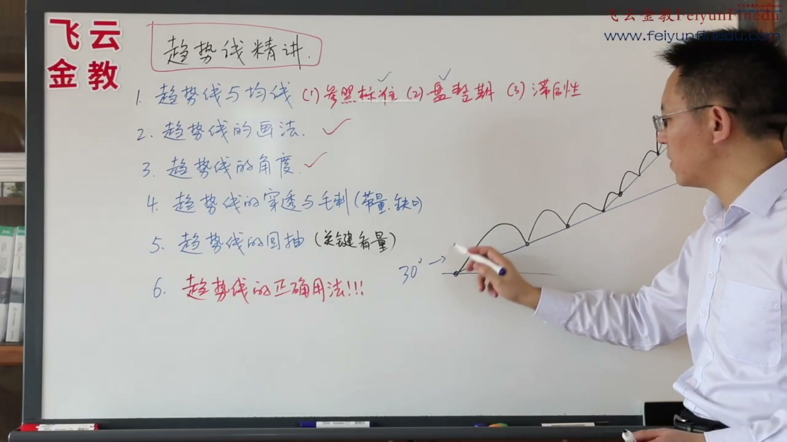
可以看看PPT 可以看看我们大量的这个复盘就行了 我觉得这个主要的白板 我就简单讲一下 好 第二个就是第三个趋势线角度 趋势线角度啊 是前期啊 我们大量的有人在问的问题 因为我们当时呢 有一个观点 这个观点就是呢 趋势线的角度非常非常重要啊 这个非常重要 一旦开始的时候 它一般是30度到45度 30度到45度 30度就比较弱 45度是最强的 只要这个趋势线沿着45度夹角走 那么它就一直会走下去 它是最强的 还极有可能有个加速 你千万不要出来 然后呢一直到了70度80度 那么趋势线就变得不稳定了 它就会出问题 好但是这个问题来了
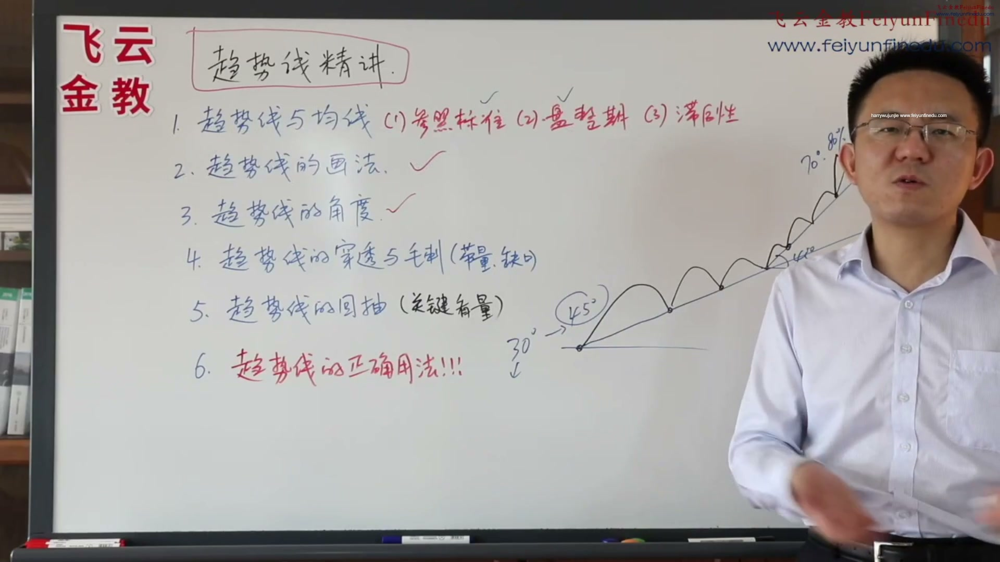
这个怎么办 没办法 真的没办法 这个所以说 趋势电的角度 就只是一个 你理解趋势电的一个含义 真的我们没有太大的办法 对这个事情去 因为它现在这种电脑计算 每一个图拉出来 自己就变了 以前是靠手画 手画的话嘛 那么这个时候 用那种对数坐标图啊 大的这个方格纸啊 很小很小的这种 东西 那个时候还有一定的准确性 现在你这个拉大缩小 你都变了 我们真的没有办法 所以呢 我们就只能把它当成一个概念的理解 你就大概估计一下 你不要去瞄啊 真是45度35度 没有必要了 你就大概感觉到 哦 现在这个趋势线还相对比较稳定 哦 现在趋势线你比较陡了 好 我们会员呢 就有一个方法判定 就是三条趋势线原则 你可以把这个趋势线的角度 变成三条趋势线了 三条趋势线啊
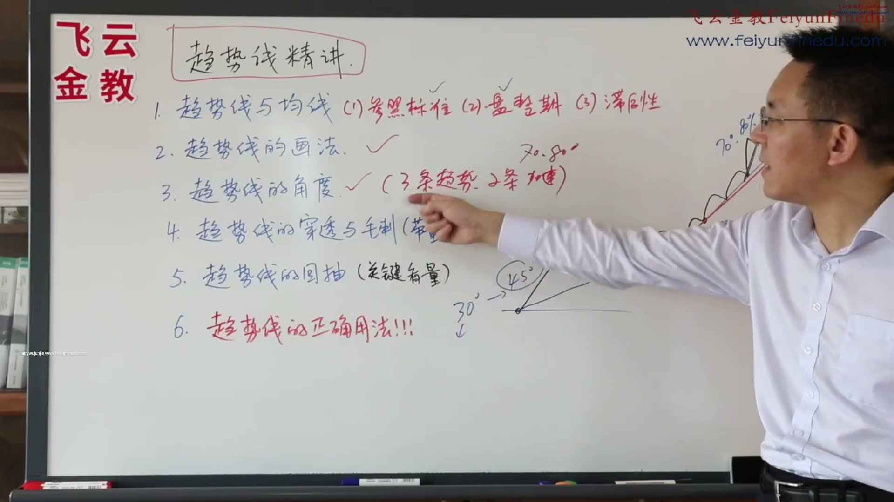
第一条加速 再有一条加速 那么基本上两条加速线之后 这个它的已经到了 基本上到了七十度八十度 这个道理很简单 大家可以想想为什么 因为你这个地方三十度往上走 你只要一加速 它角度就会增加一点 那么从三十度四十五度再往上增加 基本上是七八十度 基本上是这样子 所以你不用看都能够猜到 所以三条趋势线 两条 三条趋势线里面包括两条交织线 就是说总共三条趋势线 那么基本上这个行情就已经到了七八十度了 这是我们会员的秘密 这是我们会员的秘密 所以角度问题呢 你们就解决了 好 第四个趋势线的穿透与毛刺 好 我们刚才我们回去来看 还是看这个 我们这个趋势线 在过程中间
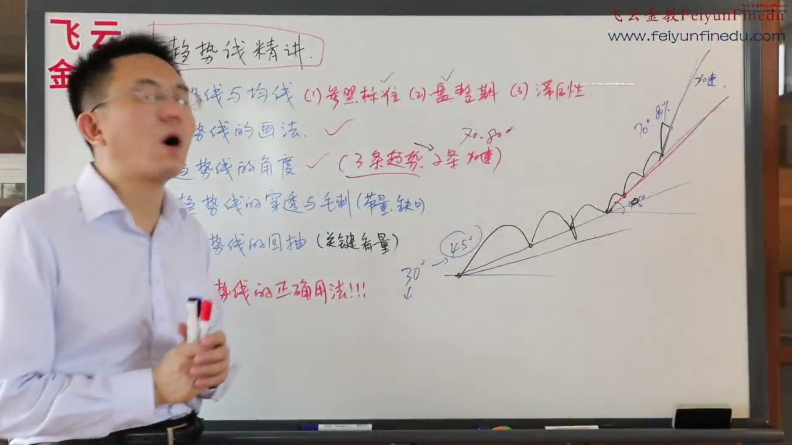
我们主要是 当时的时候 基本上这个趋势线就无效了 我们再把它再换一条 调教一条趋势线 但是后面如果有两三个点 都落在这个趋势线上 那么有一个毛刺没有关系 为什么呢 因为趋势线它是触点越多越有效 时间越长越有效 所以呢 只要是它的触点多就没有关系 千万不要那么执着啊 就认为一定要飞低点低点比得死死的 你画线的目的是什么 你画线目的不就是做了一个评判标准吗 就是加了一层滤网而已吗 对趋势进行一个判断而已吗 你画这个多一点少一点 大概没有什么影响 对你的出仓没有什么影响 关键是我们是用趋势线
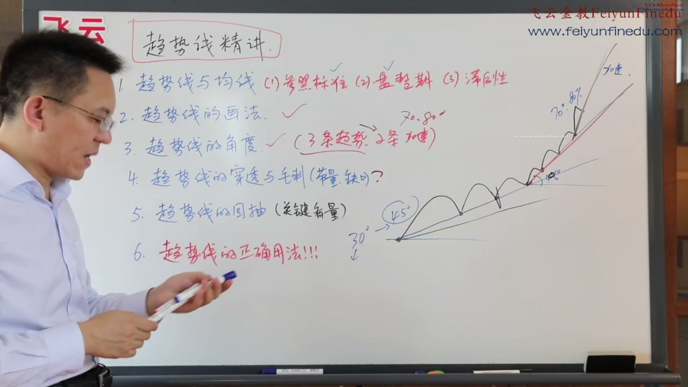
对我们赚 就是大部分赚少一点 赚多一点 是不是 好所以说 一定要注意这个问题 穿透和毛刺 有些时候没有大大问题 但是一旦它带量或缺口 这个时候就要注意了 比如这个趋势线 我们画了 当然它穿透和毛刺 是我们画趋势线的问题 我们现在说的是 就是如果是一个趋势线 它突然被中间这样子 这个地方被穿透又回来 如果这个地方量能很大 那么这个它的意义就很大 但是我觉得这个其实 这个说这么说的 但是我觉得其实这种情况比较少见 因为这个地方真的是带量突破的话 基本上它也不可能再往上走了 大概这个情况下 它会这样一个回调就下来了
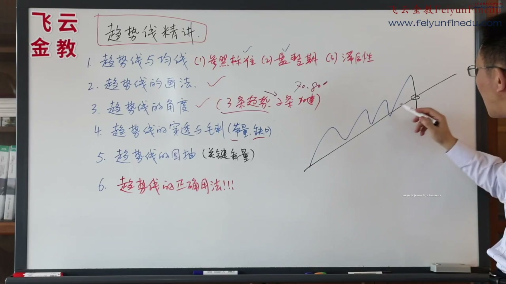
缺口 这个时候就引起紧急了 它趋势基本上会改变 好 我们现在看 趋势线的回抽 趋势线回抽 我们比如说 这个一个趋势往上涨 这条趋势线 它一旦跌破趋势线 有的人说 跌破趋势线是卖了 不对 千万不要对 这是我们的方法 我们教的方法 跌破趋势线千万不要动 要双跌破 跌破它 如果再跌破一些其他的关键点 你再去卖 而这个为什么 很多时候跌破趋势线有回抽 而且是很严重的回抽 特别是趋势越大越长 它的回抽就90%的都要放手 好 这个时候就回抽 回抽 有两种可能 一种可能是怎么 走箱体 它回抽完了之后 两个点一点 就走箱体 箱体走完又上去了 是不是 还有一个可能是回抽完了
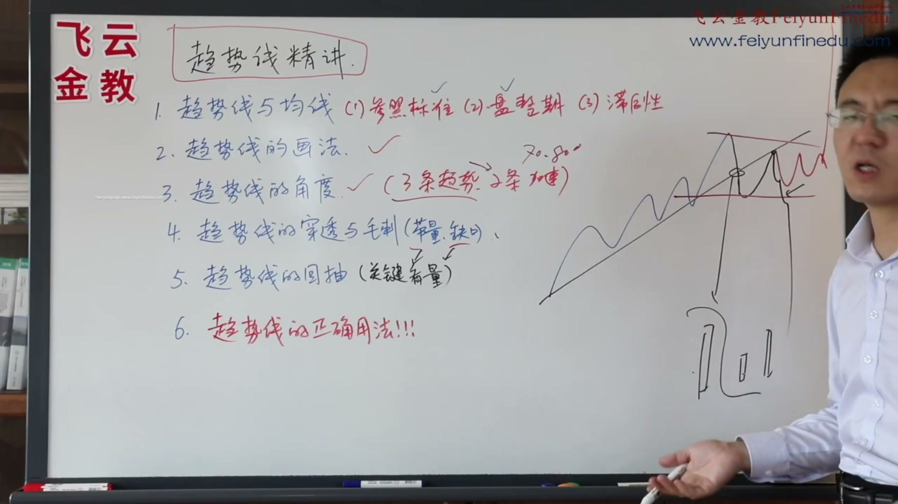
有两个办法 一个办法是 我这个压就是带量缺口 它这个回抽如果是比如下跌量很大 回抽量非常小 再来一个量往下打 那么80% 90%的概率 这个地方趋势就结束了 如果它这个地方跌的时候是反的 量比较小 回抽的时候量比较大 那么这个行情就极大可能是一个中继行情 不是一个趋势反制的行情 所以关键排量 另外一个看缺口什么意思呢 它如果这个地方直接打下来突破 是一个缺口形式的突破 那么很可能它的回抽量会比较弱 它如果没有缺口 那么这个地方力量它可能会大一点 主要是看质量 趋势的回抽 一定要注意 绝大部分的趋势线
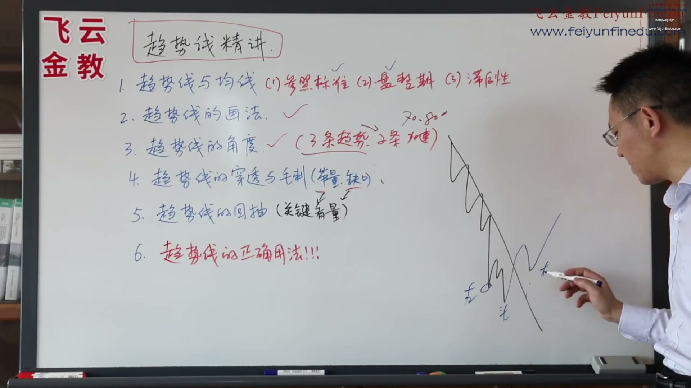
比如这是下降趋势线 下降 突破 这个地方 当它突破的时候 往往都会有回收 这个回收 有可能会落到趋势线上 也有可能不落 这个无所谓 它如果不落 再往上 大家看到没有 就是我们经典的头肩底 左肩 头部 右肩 是吧 也是我们经典的微科目的二次测试 所以所有的理论都可以连在一起 它只要是回抽 那么反倒是我们一个买点 请大家注意 如果再往上突破 就是我们的双突破 但回抽买点 这个地方是一个测试性的 如果没有量的配合 那么很有可能怎么样 这个地方 它回抽完 又做一个箱体 最后又跌下去了 谁都不知道
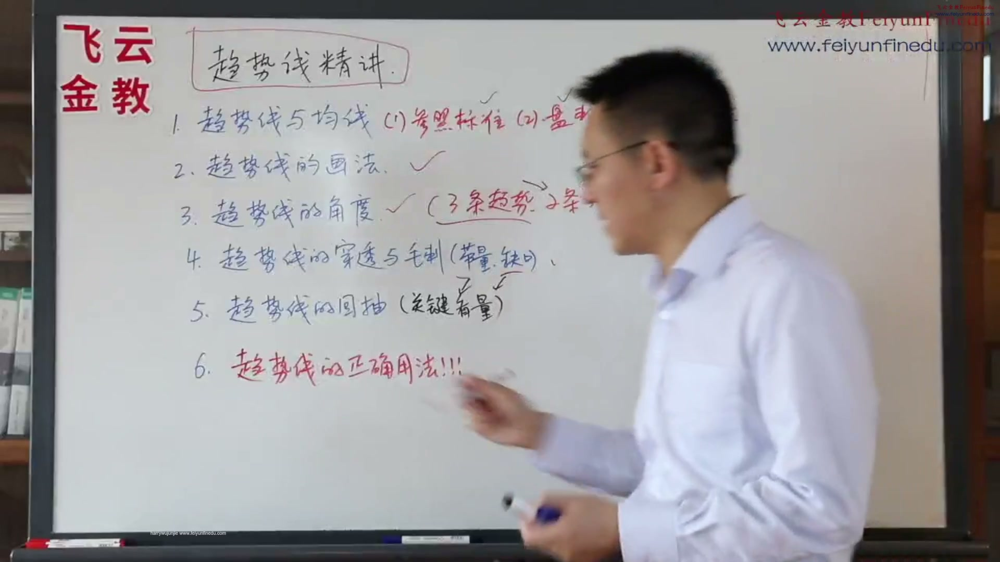
回抽呢 那么简单的说 我们主要判断就是要看量大不大 回抽的时候量大不大 一般的时候 回抽的时候缩量是一个很好的事情 还有就是看看有没有缺口 好 这个刚才啊 其实我们已经讲了 去实现了正确用法 我们现在呢 再来稍微的总结一下 我可以说啊 这是最重要最重要的 请大家一定要注意 你们看到好多的老师 好多的书都是在乱讲 都可能让你亏钱 这是非常非常重要的 这也是我实践的经验台 就是我们上涨的时候 如果我们根据双突破买入 那么趋势线的正确用法就是
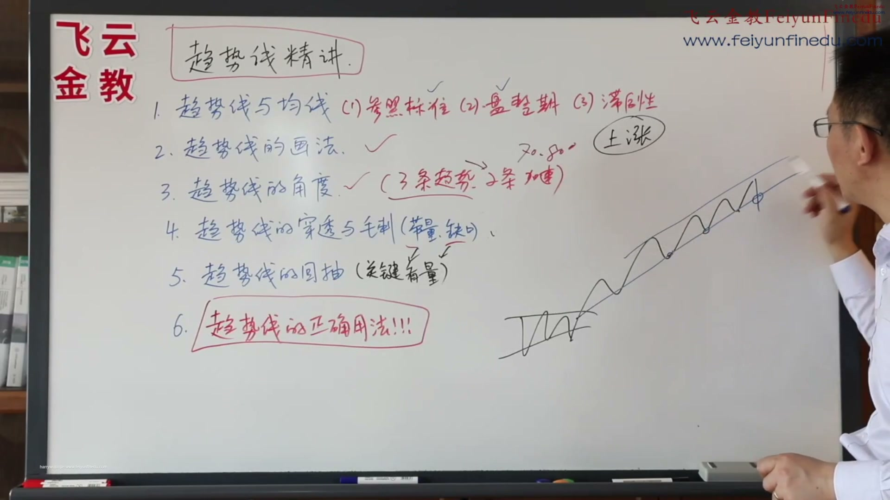
碰趋势线的时候 我们去买 我再说一下 我希望大家有个理解 有的老师 有的人说 上面有一个心理学说法 就不要教错误的说法 有些人说错误的说法 你一说反倒 给大家印象更深刻 所以就不提这个错误的说法 总之 你不能够 以为趋势线 有什么支撑 或者也不能认为 这上面的趋势线有什么压力 比较在这高头低膝 这是错误的做法 它可能会让你在 短时间赚一点点钱 但是一定会让你 想赚大亏 当然这个又涉及到 我们的小区间盘转和大区间盘转 这个以后给大家讲 总之只要是这个区间的 比较小 我们就尽量的用什么
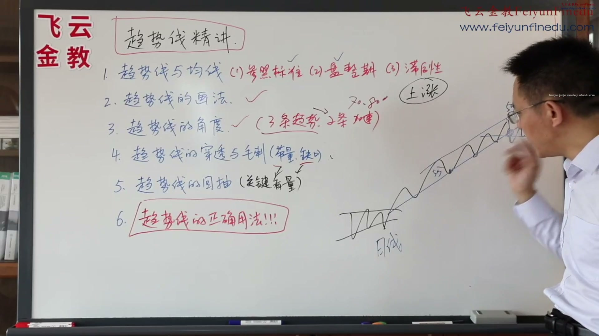
然后来个双跌破 我们的资金100%的 我们就出来了 基本上这是我们来判断出场 而不是在这些点位去买 我们的买入点是形态和趋势线的出入 包括这些点位 如果我们这个是一个日线 这个是个日线 那么这一点可不可以买 其实也是可以买 但是你要用五分钟的双突破 你说你一定要等到这里面有个双突破 然后用五分钟级别的双突破 然后再去买 买错了在这儿支付 而不是说用日线级别的 看到这种你就去高高低息 高高低息这种方法 它只有在大周期才有效 什么叫大周期 比如这个地方是一个窄幅波动 你就绝对不能高高低息 但这个地方它是一个波动力像这样子的一个 宽幅的波动 那么你还可以试一试高高低息
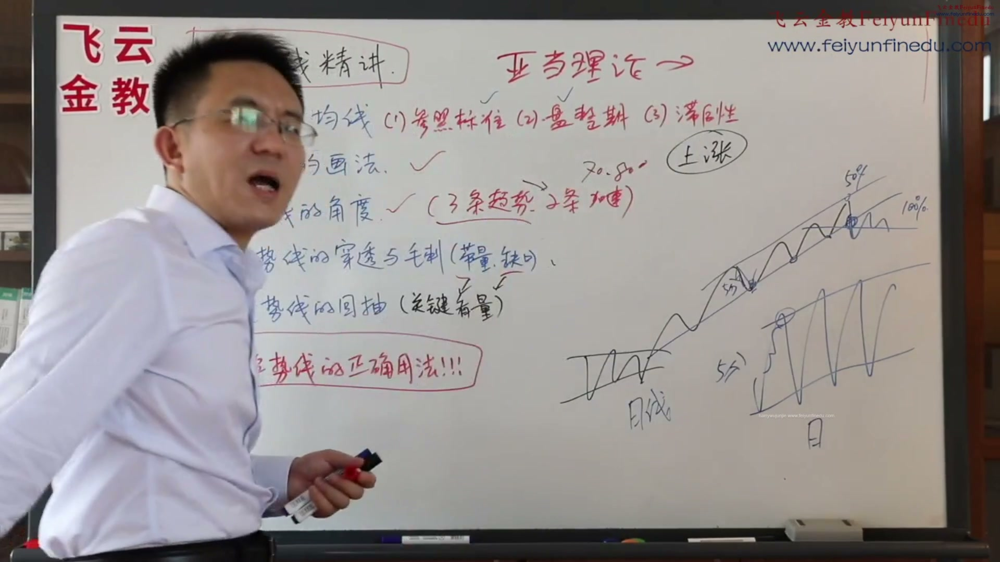
用五分钟去 造双突破系统 那有人问为什么 为什么 这就是我前面很多年 都没赚到钱的原因 后面等我真正的女巫大佬学会了 我就一直赚钱 就是因为这个质的改变 就是亚当理论里面的惯性 亚当理论的核心 亚当理论的核心是什么 什么是趋势 趋势就是惯性 趋势就是惯性 那么如果我们举个例子 这上来这碰这个地方 你没有双突破作为信号 惯性在哪里 你在涨了 惯性还在涨呢 没有任何理由说 他在这就表示说 它就要低下来 是不是 所以惯性只要在
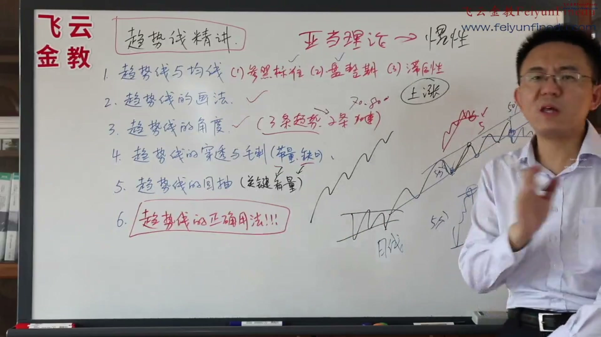
那么你做的是五分钟的惯性 为什么 在这个上涨过程中间 它五分钟级别有一个双跌破 这个五分钟级别的惯性 有可能会带动十五分钟 二十分钟 三十分钟的惯性 但是至少它有一个惯性爆点 它的惯性出来了 那你说一个行情是这样子 人家走得好好的 人家惯性在哪里 惯性在上涨 你凭什么去控它 你没有一定点理由去控它 因为惯性在 趋势就在 只有耐心的等待 惯性改变的那一瞬间 就算你是做一分钟行情 你都要必须要等待 惯性改变的那一瞬间 比如说这些涨涨涨 根本就没有惯性 好 再往前再跌 惯性改变了吗 也没有改变了 为什么 它可能是个小回调 但是它回来再上来 好再上来
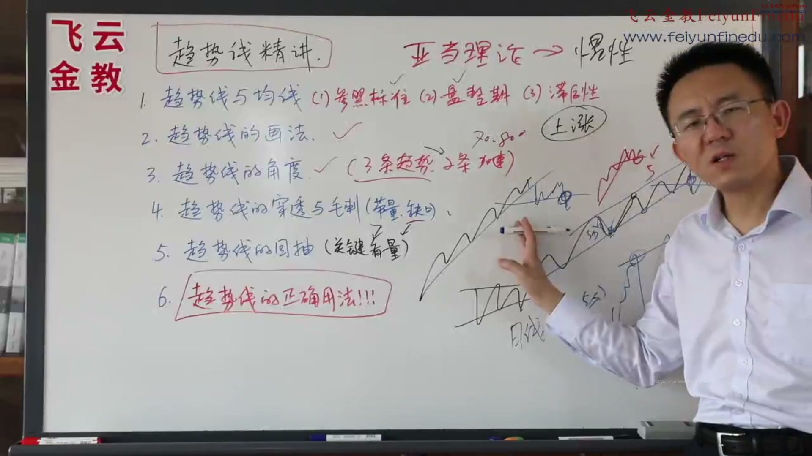
它的惯性才有可能 出来 惯性出来趋势就可能出来 这是一个核心的核心的核心 请大家一定要注意 这个就是我后来 一直到现在能够稳定 盈利的最核心的东西 根据刀石云上流行 推出惯性 以前其实我早就懂了 但是我当时 这个核心的这一点 始终拥有不到 最后当我看到亚当理论的文章的时候 突然就提出惯例 是啊 什么是趋势 趋势就是惯性 惯性就是反复重复的事情 你在这个时候的时候 你完全可以走箱体 它可以懒惰重复箱体 你凭什么说这个惯性改变呢 只有当这个箱体被突破 这一段再被突破